Anggota Kelompok
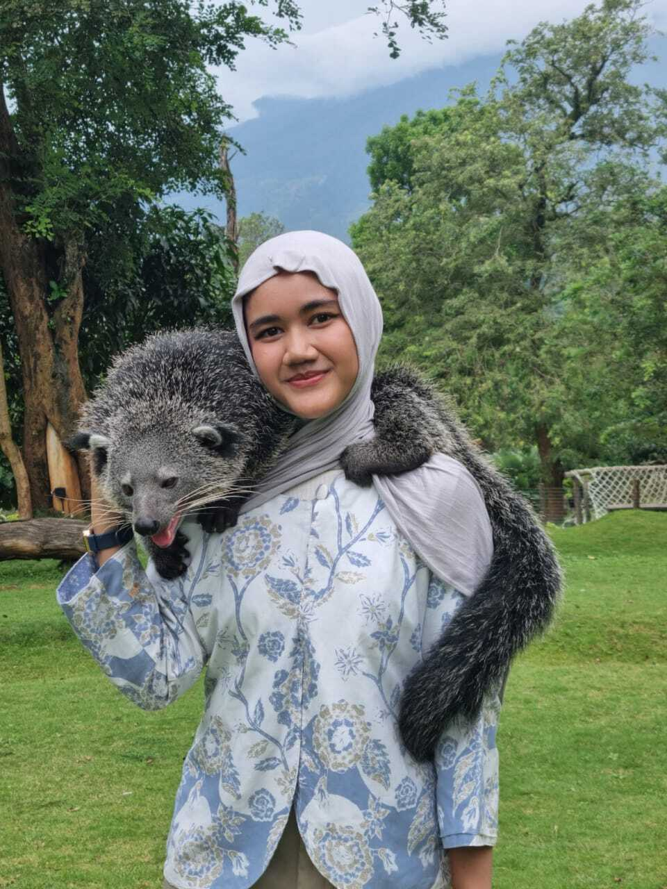
Shahnaz Aulia A.
32
Pencari MateriCandra Ferry O.
14
Pembuat Website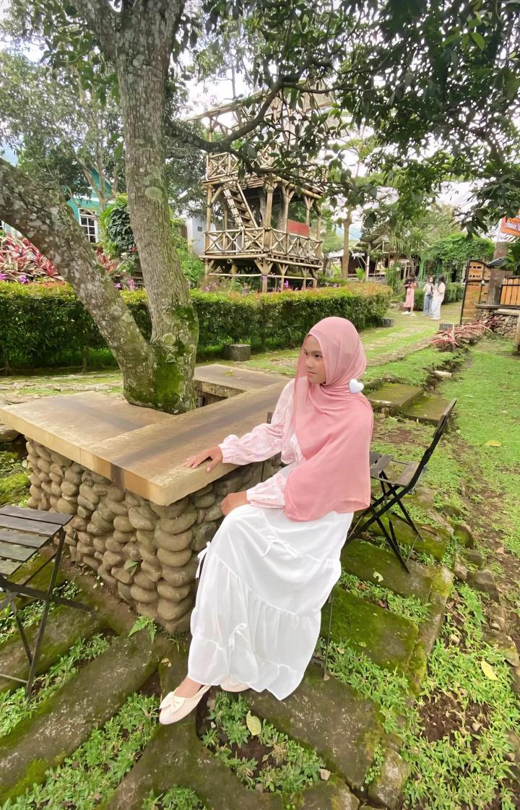
Puspita Listiya W.
28
Pencari MateriSejarah Reformasi
Sejarah reformasi Indonesia merupakan salah satu tonggak penting dalam perjalanan bangsa. Reformasi bukan sekadar perubahan politik, melainkan transformasi menyeluruh dalam kehidupan bernegara, pemerintahan, hukum, dan sosial.
Gerakan reformasi Indonesia yang memuncak pada tahun 1998 menandai berakhirnya rezim Orde Baru yang dipimpin oleh Presiden Soeharto selama lebih dari 32 tahun. Krisis ekonomi, korupsi yang merajalela, serta tuntutan demokrasi dari rakyat menjadi pendorong utama lahirnya era baru yaitu Era Reformasi.
Untuk memahami sejarah reformasi Indonesia, perlu ditelusuri kondisi sosial, ekonomi, dan politik pada masa akhir pemerintahan Orde Baru. Pada pertengahan 1990-an, Indonesia mengalami pertumbuhan ekonomi pesat. Namun, di balik kemajuan itu, terjadi ketimpangan sosial, kolusi, dan korupsi di berbagai lapisan pemerintahan. .
Ketika krisis moneter Asia melanda tahun 1997, nilai tukar rupiah jatuh drastis, harga kebutuhan pokok melonjak, dan pengangguran meningkat. Situasi ini memperburuk kepercayaan rakyat terhadap pemerintahan Soeharto.
Krisis Politik
Rakyat menuntut pergantian kepemimpinan nasional.
Krisis hukum
Banyak pelanggaran HAM dan kebebasan pers dibatasi.
Krisis sosial
Muncul konflik dan ketegangan antar-etnis.
Semua faktor tersebut menjadi bahan bakar bagi lahirnya gerakan reformasi nasional.
Kondisi Ekonomi 1998
Indonesia pernah mengalami sejarah yang cukup kelam dalam sistem perekonomian yang cukup membekas sampai saat ini yang tidak hanya berdampak pada sektor keuangan dan perekonomian, tetapi juga memicu gejolak sosial dan politik yang cukup besar dan paling berdampak bagi masyarakatnya. Krisis Moneter 1998 menjadi salah satu peristiwa paling bersejarah dalam bidang ekonomi dan politik di Indonesia. Krisis yang bermula dari anjloknya nilai rupiah terhadap dolar AS ini bukan hanya mengguncang stabilitas ekonomi nasional, tetapi juga menggoyahkan sendi-sendi pemerintahan Orde Baru. Secara Internal, perekonomian Indonesia rentan terhadap guncangan karena lemahnya sistem perbankan serta tingginya utang luar negeri. Akibatnya, Presiden Soeharto yang telah berkuasa selama lebih dari tiga dekade akhirnya harus lengser dari jabatannya pada Bulan Mei Tahun 1998.
Kondisi Politik 1998
Krisis moneter tidak hanya menghancurkan perekonomian, tetapi juga mengguncang legitimasi politik Presiden Soeharto. Kepercayaan masyarakat terhadap pemerintah menurun drastis. Gerakan mahasiswa dan masyarakat menuntut reformasi besar-besaran, menuntut diakhirinya praktik KKN, serta menuntut Soeharto untuk mundur.
Puncaknya terjadi pada 21 Mei 1998, ketika Soeharto secara resmi mengundurkan diri dari jabatannya setelah 32 tahun berkuasa. Peristiwa ini menandai berakhirnya era Orde Baru dan lahirnya Era Reformasi, yang membawa perubahan besar dalam sistem politik, ekonomi, dan demokrasi Indonesia. Krisis Moneter 1998 menjadi titik balik penting dalam sejarah bangsa. Dari krisis inilah Indonesia belajar tentang pentingnya transparansi ekonomi, pengawasan sistem keuangan, serta perlunya pemerintahan yang bersih dari korupsi. Meski menyakitkan, krisis ini membuka jalan menuju reformasi yang memperkuat demokrasi dan menata kembali perekonomian nasional
Timeline Peristiwa Reformasi 1998
Pembentukan Kabinet Pembangunan VIII
Kemarahan rakyat tersulut karena ketidakpuasan hasil Pemilu, lalu pada 10 Mei 1998 terjadi pembentukan Kabinet Pembangunan VIII. Susunan kabinet tersebut dinilai masyarakat masih sangat lekat dengan ciri korupsi, kolusi, dan nepotisme (KKN).
Pembentukan Majelis Kepemimpinan Rakyat
Amien Rais mengumumkan Majelis Kepemimpinan Rakyat. Majelis itu terdiri dari 30 hingga 40 tokoh masyarakat dari berbagai elemen, bakal terbentuk pada akhir Mei 1998 guna menuntut reformasi. Ia juga menyerukan kepada ABRI untuk tidak melakukan cara-cara kekerasan terhadap para mahasiswa yang berunjuk rasa
Kerusuhan Mei 1998
Tragedi Trisakti membuat masyarakat marah, terjadi kerusuhan massa besar-besaran di Jakarta dan sekitarnya. Kerusuhan ini mengakibatkan kegiatan perekonomian masyarakat lumpuh. Dalam kerusuhan terjadi juga penjarahan ratusan toko dan pusat perbelanjaan. Ribuan orang menjadi korban meninggal akibat kebakaran tersebut. Pada saat kerusuhan terjadi, Presiden Soeharto tidak di tanah air karena tengah menghadiri KTT G-15 di Kairo, Mesir.
Tokoh Penggerak Reformasi
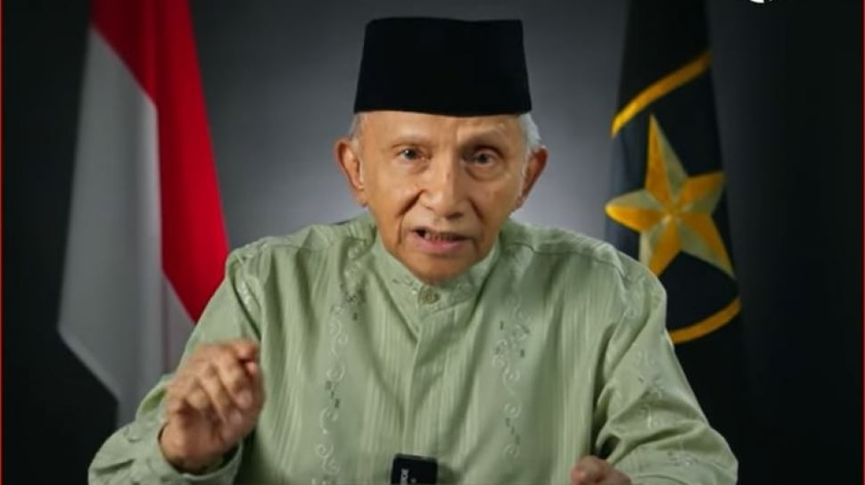
Amien Rais
Lokomotif GerakanTokoh utama Muhammadiyah yang vokal mengonsolidasikan elemen masyarakat sipil.
Megawati Soekarnoputri
Simbol PerlawananFigur sentral PDI Perjuangan yang merepresentasikan perlawanan politik massa.
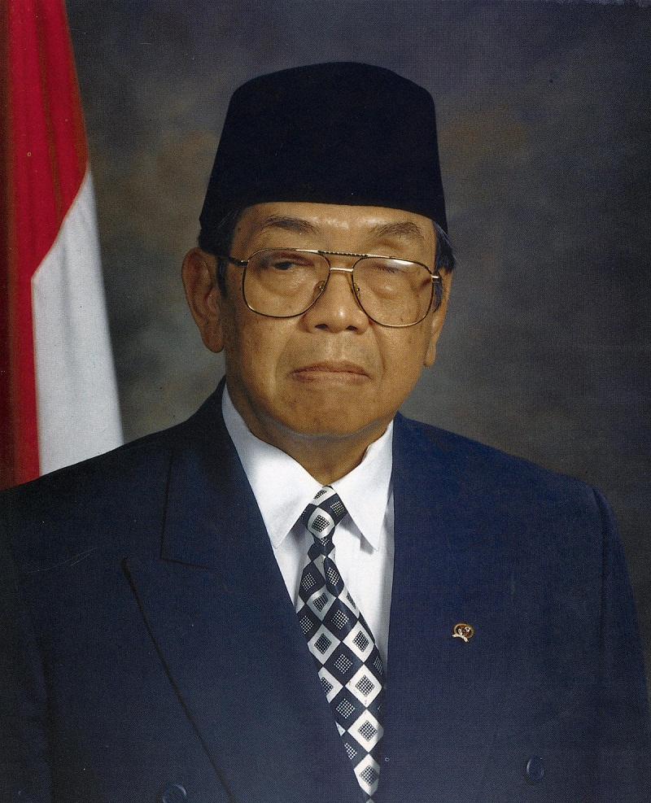
Gus Dur (Abdurrahman Wahid)
Guru BangsaKetua Umum PBNU yang konsisten menjaga harmoni sosial serta pluralisme nasional.
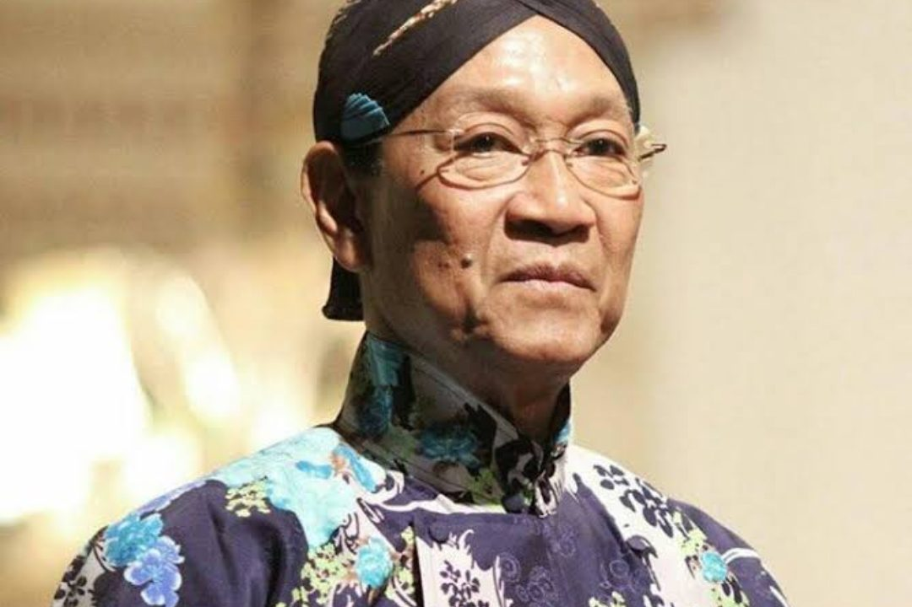
Hamengkubuwana X
Penjaga Stabilitas NasionalSri Sultan Hamengkubuwono X memiliki peran penting dalam menjaga stabilitas Yogyakarta dan memberikan dukungan moral terhadap gerakan reformasi.
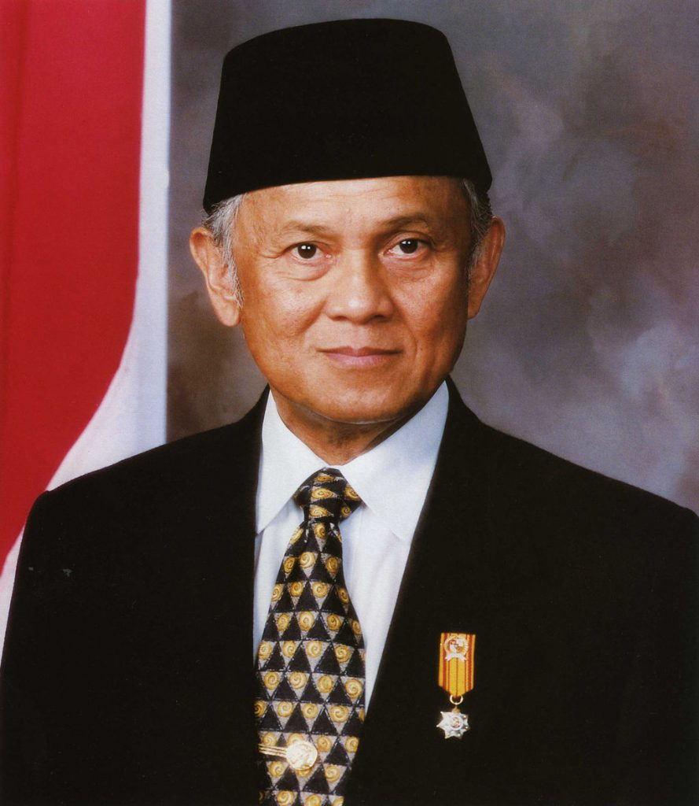
Prof. Dr. Ing. H. B.J. Habibie
Bapak Teknologi Indonesia
Jejak Langkah & Inspirasi Teknokrat
Biografi
Bacharuddin Jusuf Habibie atau B.J. Habibie lahir di Pare-Pare, Sulawesi Selatan, pada 25 Juni 1936. la merupakan Presiden ke-3 Indonesia dan Wakil Presiden ke-7 RI. Sejak kecil, Habibie dikenal cerdas dan sangat tertarik pada ilmu pengetahuan serta teknologi, khususnya fisika.
Setelah sempat kuliah di Teknik Mesin ITB, ia melanjutkan pendidikan ke Jerman pada tahun 1955 di RWTH Aachen. Dengan dukungan ibunya, R.A. Tuti Marini Puspowardoyo, Habibie berhasil menyelesaikan pendidikan S-1 hingga S-3 di Jerman selama sekitar 10 tahun. Pada tahun 1962, ia menikah dengan teman SMA-nya, Hasri Ainun Besari
Masa Pemerintahan B.J. Habibie
Setelah Presiden Soeharto lengser pada 20 Mei 1998, Bacharuddin Jusuf Habibie yang saat itu menjabat sebagai Wakil Presiden diangkat menjadi Presiden Indonesia. Pada masa pemerintahannya, Indonesia sedang mengalami krisis ekonomi yang sangat parah. Nilai rupiah melemah, inflasi meningkat, banyak bank mengalami kebangkrutan, dan kepercayaan masyarakat terhadap pemerintah menurun. Untuk mengatasi kondisi tersebut, pemerintahan B.J. Habibie melakukan berbagai reformasi ekonomi di bidang moneter, perbankan, fiskal, dan korporasi.
Di bidang moneter, pemerintah mengendalikan jumlah uang beredar, menaikkan suku bunga Sertifikat Bank Indonesia hingga 70%, serta menerapkan bank sentral independen untuk menstabilkan perekonomian. Di bidang perbankan, pemerintah menerbitkan obligasi sebesar Rp650 triliun untuk menyelamatkan perbankan nasional, menutup 38 bank bermasalah, dan mengambil alih tujuh bank lainnya. Sementara itu, di bidang fiskal pemerintah membatalkan sejumlah proyek infrastruktur, menghentikan perlakuan khusus terhadap mobil nasional, serta membiayai program Jaring Pengaman Sosial untuk membantu masyarakat yang terdampak krisis. Pada bidang korporasi, pemerintah melakukan restrukturisasi utang swasta melalui INDRA dan Prakarsa Jakarta serta mengurangi praktik monopoli oleh Bulog dan Pertamina.
Meskipun situasi politik dan keamanan saat itu tidak menentu, pemerintah tetap mengambil keputusan dengan cepat walaupun berisiko tinggi. Kebijakan tersebut akhirnya membawa dampak positif bagi Indonesia, seperti membaiknya pertumbuhan ekonomi dari -13% menjadi 2% dan turunnya inflasi dari 77,6% menjadi 2%. Reformasi ekonomi pada masa pemerintahan B.J. Habibie menjadi langkah penting dalam proses pemulihan Indonesia setelah krisis ekonomi 1998.
Restrukturisasi Ekonomi
Di tengah kepungan inflasi, Habibie melakukan langkah spektakuler yang diakui dunia internasional dalam menstabilkan perekonomian mikro dan makro.
- Independensi BI ditegakkan penuh (UU No. 23/1999).
- Pembentukan Badan Penyehatan Perbankan Nasional (BPPN).
- Melikuidasi sejumlah bank sistemik yang bermasalah.
Demokratisasi Politik
Keran kebebasan yang tersumbat selama tiga dekade dibuka lebar-lebar demi mewujudkan iklim demokrasi konstitusional yang sehat.
- UU Pers No. 40/1999 disahkan (Bebas Bredel).
- Pembebasan Napol (Tahanan Politik) era Orde Baru.
- Pembatasan Masa Jabatan Presiden (Maksimal 2 Periode).
Akhir Jabatan B.J Habibi
Akhir masa jabatan Bacharuddin Jusuf Habibie terjadi setelah Sidang Umum MPR tahun 1999. Pada sidang tersebut, Habibie menyampaikan pidato pertanggungjawaban mengenai kinerjanya selama menjadi presiden. Namun, laporan pertanggungjawaban itu ditolak oleh MPR karena banyak anggota MPR yang menilai kebijakan dan langkah pemerintahannya masih menimbulkan kontroversi, termasuk masalah referendum Timor Timur yang berujung pada lepasnya wilayah tersebut dari Indonesia. Setelah pidatonya ditolak, B.J. Habibie memutuskan untuk tidak mencalonkan diri kembali sebagai presiden pada pemilu tahun 1999. Akhirnya, jabatan presiden digantikan oleh Abdurrahman Wahid atau Gus Dur yang terpilih sebagai Presiden Indonesia keempat.
Nilai yang Dapat Dipelajari Dari Reformasi
Masa Reformasi memberikan banyak pelajaran penting bagi bangsa Indonesia. Salah satu nilai yang dapat dipelajari adalah pentingnya demokrasi dan kebebasan berpendapat. Pada masa reformasi, mahasiswa dan masyarakat berani menyampaikan aspirasi serta kritik terhadap pemerintah demi terciptanya perubahan yang lebih baik. Selain itu, reformasi juga mengajarkan pentingnya pemerintahan yang jujur, bersih, dan bebas dari praktik korupsi, kolusi, dan nepotisme (KKN).
Nilai Persatuan
Nilai lainnya adalah semangat persatuan dan kepedulian terhadap kondisi bangsa. Walaupun masyarakat berasal dari latar belakang yang berbeda, mereka tetap bersatu untuk memperjuangkan keadilan dan perbaikan negara. Masa reformasi juga mengajarkan bahwa rakyat memiliki peran penting dalam mengawasi jalannya pemerintahan agar kekuasaan tidak disalahgunakan.
Pentingnya HAM
Selain itu, reformasi memberikan pelajaran tentang pentingnya menghormati hak asasi manusia, kebebasan pers, dan keterbukaan informasi. Dari peristiwa reformasi, bangsa Indonesia belajar bahwa perubahan dapat terjadi jika masyarakat memiliki keberanian, kerja sama, dan rasa tanggung jawab terhadap masa depan negara. Oleh karena itu, semangat reformasi harus terus dijaga agar Indonesia menjadi negara yang lebih demokratis, adil, dan sejahtera.
Galeri Dokumenter

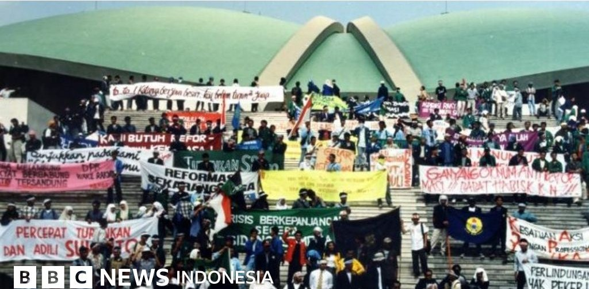
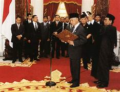
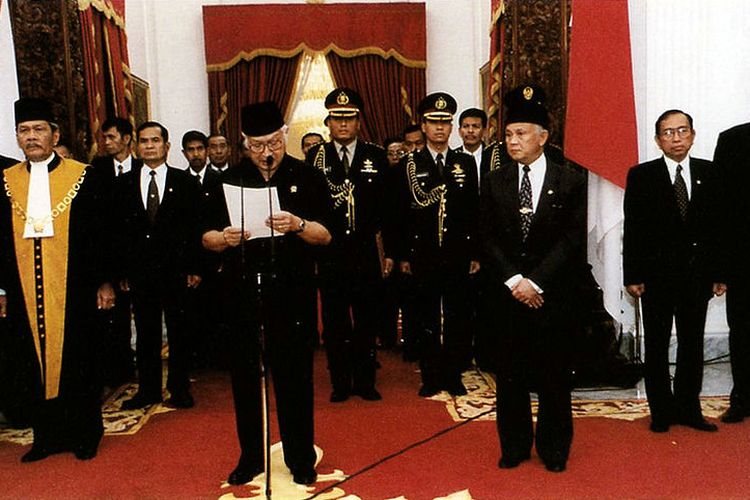
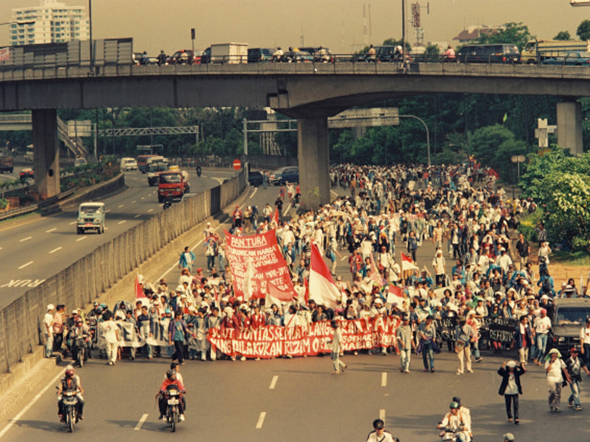
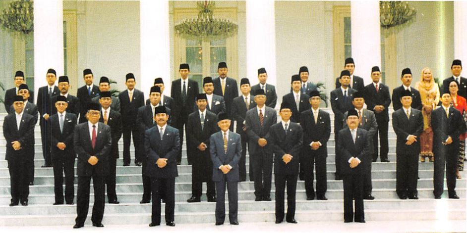
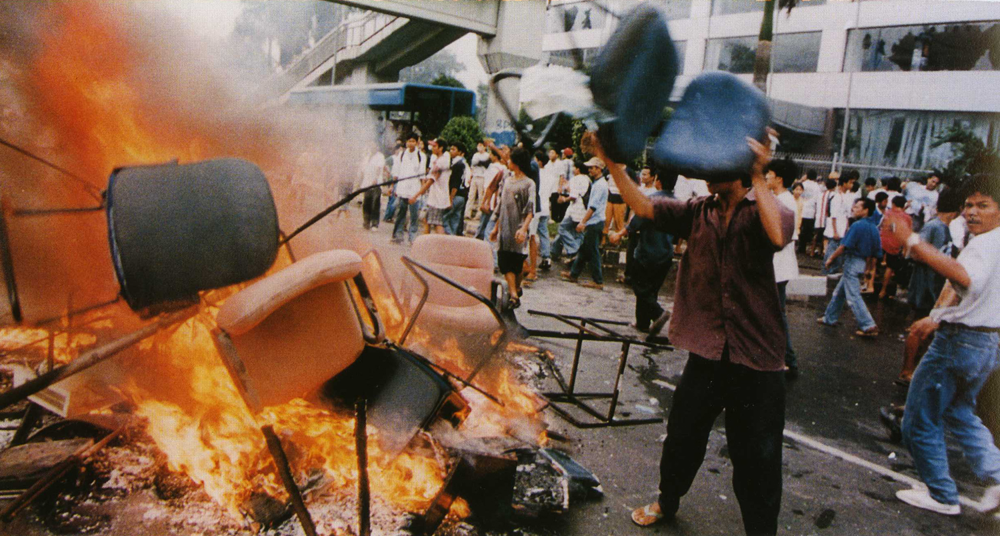
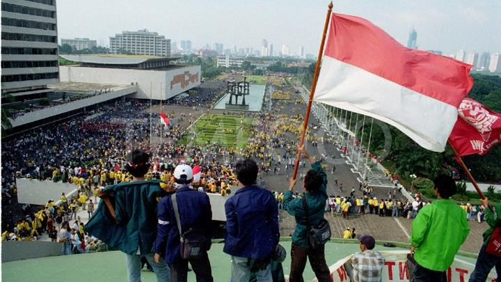
Evaluasi & Pemahaman Materi
Loading Soal...
Peringkat Simulasi Lokal
- 1. Siswa Mandiri Skor: 100
- 2. Detektif Sejarah Skor: 50